장치형비점오염
비점오염원(non-point pollution source)의 정의
비점오염원이라 함은 도시, 도로, 농지, 산지 공사장 등 불특정 장소에서 불특정하게 수질오염물질을 배출하는 배출원
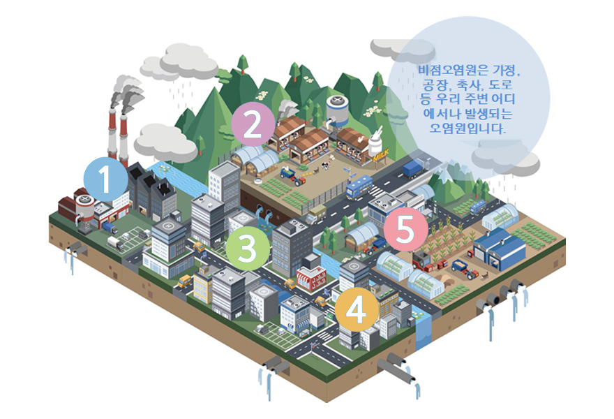
- 비점오염원의 배출 : 대지, 도로, 논, 밭, 임야, 대기 중의 오염물질 등
- 비점오염물질의 종류 : 토사, 영양 물질, 박테리아 기름, 바이러스, 유기물질 살충제, 금속, 협잡물
- 비점오염원의 특징 : 인위적 및 자연적 / 배출 지점이 불특정, 불명확 / 희석, 확산되면서 넓은 지역으로 배출 / 강우 등 자연적 요인에 따른 배출량의 변화가 적음 / 모으기 어렵고 처리 효율이 일정치 않음
| 1. 산업단, 공업지역 | 각종 야적장, 대형 트럭 분진, 폐기물 등 다양한 오염 물질이 비와 함께 하천으로 갑니다. 특히 화학물질이나 유류 등이 많아 세심한 관리가 필요합니다. |
|---|---|
| 2. 가축지역 | 나지에 쌓인 분뇨, 하천 근처에 방목되는 가축의 배설물 등이 비와 함께 하천으로 흘러들어갑니다. 특히 영양 물질과 병원균이 많이 포함되어 있어 관리가 매우 필요합니다. |
| 3. 도로, 주차장 등 포장면 | 타이어 마모, 적재물 낙하, 자동차 배기가스 등 도로에 쓸 뼈있는 각종 오염 물질들이 비와 함께 하천으로 흘러들어갑니다. 특히 중금속, 오일류 등이 많이 포함되어 있어 비오기 전 청소가 중요합니다. |
| 4. 주거지역 및 상업지역 | 우리가 살아가는 다양한 지역에서 발생되는 오염물질이 비와 함께 하천으로 흘러들어갑니다. |
| 5. 농촌지역 | 농약, 퇴비, 비료, 토사 등 농업 활행에 따라서 발생되는 오염 물질들이 비와 함께 하천으로 갑니다. 비 오기 전 비료 살포 등을 주의해야 합니다. |
비점오염원 설치 신고 제도
적용 대상
- 환경영향평가 대상 개발 사업 (12개 사업)
- 폐수 배출 사업장 (부지 면적 1만㎡ 이상 사업장)
비점오염저감시설 장치형 처리개요 및 원리
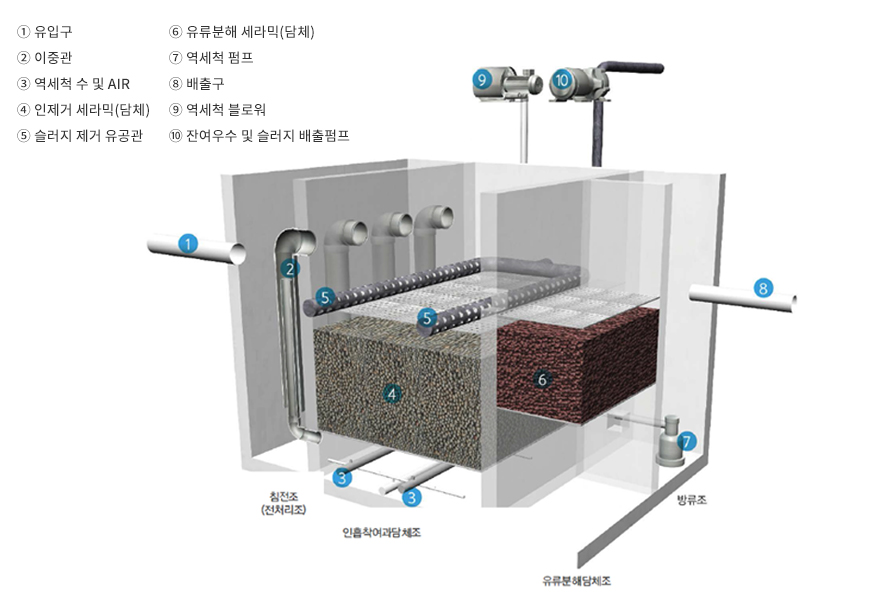
- 1단계 침전조의 이중관 구조로 토사, 모래, 낙엽, 협잡물 등 제거
- 2단계 특수한 다공성 세라믹 담체로 T-N, T-P 제거
- 3단계 유류분해 미생물에 의한 유류(엔진오일, 윤활유 등) 제거
- 4단계 강우 종류 후 자동운전으로 역세척 실시 및 잔여 우수 배출
* 고효율 역세척 및 자동운전으로 장기간 안정적인 처리효율과 관리가 용이한 비점오염 저감 처리 장치
특징 및 장점
- 안정적인 처리 효율 : 이중관 침전조(1단계), 다공성 세라믹담체 (2단계), 유류 분해 미생물(3단계), 총 3단계에 의한 안정적·효과적인 처리 효율 달성
- 높은 역세척 효율 : 공기세척 + 수세척 동시 실시로 안정적이고 높은 역세척 효과
- 슬러지 처리 : 역세척시 부유된 SS를 유공관으로 이송, 하수처리장 연계 처리
- 유지관리 용이 : 높은 역세척 효율과 고강도 담체의 반영구적 사용, 자동운전에 따른 유지관리 용이
처리효율
| 구분 | SS | 탁도 | BOD | N-H | T-N | T-P |
|---|---|---|---|---|---|---|
| 처리효율(%) | 85% 이상 | 83% 이상 | 70% 이상 | 98% 이상 | 60% 이상 | 80% 이상 |
흐름도
강우시 흐름도
- 침전조(전처리조) : 입자가 큰 부유물질을 1차 침전시켜 제거하고, 이중관에 의해 2차 침전·제거
- 인흡착여과담체조 : 다공성 세라믹 담체 사용 영양염류(T-N, T-) 제거
- 유류분해담체조 : 유류분해 미생물을 고착시킨 담체에 의한 엔진오일, 윤활류 등 흡착 및 분해
역세시 흐름도
- 강우 종료 및 침전조의 수위 상승시 역세척 자동 실시
- 강우 시 흡착된 슬러지를 블로워(공기)와 방류조의 처리수를 재활용하여 담체 세쳑(공기 세척 + 수세척)
- 부유된 슬러지는 유공관을 통해 하수처리장으로 연계 처리
제품사양
| 제품명 | 처리용량(㎥/hr) | 크기(m) (W × L × H) | 처리면적(㎥) |
|---|---|---|---|
| CH-30 | 30 | 2.0 × 2.4 × 2.1 | 12,000 |
| CH-50 | 50 | 2.5 × 3.2 × 2.1 | 20,000 |
| CH-70 | 70 | 2.8 × 4.0 × 2.1 | 28,000 |
| CH-100 | 100 | 3.5 × 4.4 × 2.2 | 40,000 |
| CH-200 | 200 | 4.2 × 7.6 × 2.2 | 80,000 |
| CH-300 | 300 | 5.0 × 9.6 × 2.2 | 120,000 |
| CH-500 | 500 | 7.5 × 10.7 × 2.2 | 200,000 |
| CH-1,000 | 1,000 | 10.0 × 16.0 × 2.2 | 400,000 |
전라남도 환경산업진흥원 성능검사 합격(중소기업진흥원 지원사업)
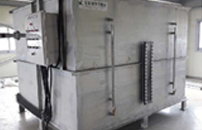
비점오염저감시설 장치형 외관
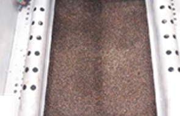
인흡착여과조의 담체
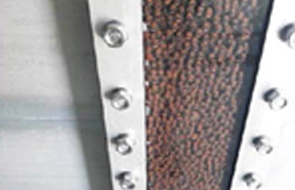
강우시 SS를 흡착한 담체
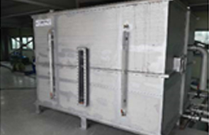
모델명 : CH-60, 처리용량 30Ton/hr
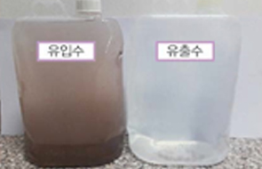
강우시 Sample 채취
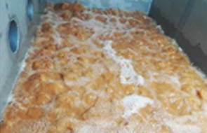
강우 종료 후 역세척
다공성세라믹(미생물고착)
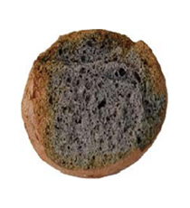
다공성팽창세라믹
제품 개요
- 천연유기질을 황토, 점토와 균일하게 배합하여 1100~1200℃에서 소성팽창되어진 다공성 소재로서 물리적·화학적 특성이 매우 우수한 세라믹 담체
- 팽창되어진 세라믹담체에 기능성 미생물을 고착시킨 고기능성 담체
제품 특징
- 황토의 금속이온에 의한 인(T-P)제거 능력 탁월
- 내부의 크고 작은 공극에 의한 질산화 및 탈질 반응
- 유기물, 영양염류, 중금속 물질 등의 흡착산화 반응
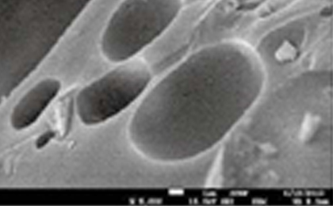
전자현미경으로 본 담체의 기공
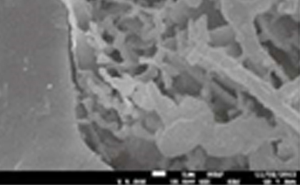
담체의 기공에 미생물이 고정된 모습
유류분해 미생물
지적재산권
- 특허 제10-0866526(유류분해미생물 특허)
- 내용 : 폐유와 누출유로 인해 토양오염, 수질오염, 해양오염된 지역을 아시네토박터 칼토아세티쿠스, OM1 균주를 이용하여 친환경적으로 분해하는 조성물 및 방법
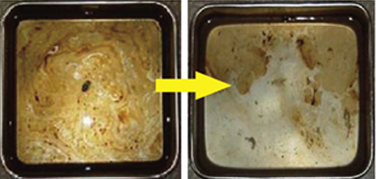
미생물 적용 24hr 후
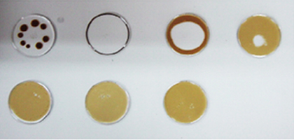